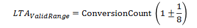
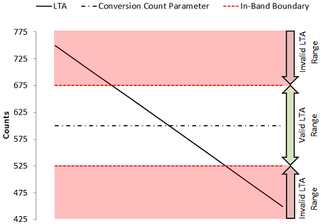

The runtime re-calibration feature provides a runtime check of each element in the sensor to ensure that it is within the resolution and sensitivity band that was specified. The conversion count and conversion gain parameters (in the Conversion Control section) specify the desired measurement resolution and sensitivity for the sensor. At device power-up, each element in the sensor is calibrated according to these values. However, environmental drift due to temperature, voltage, humidity, and other factors may cause elements within the sensor to slowly drift from their initial calibration target over time.
Run-time re-calibration, if enabled, checks each element after every measurement to ensure that the long term average (LTA) is within range of the specified conversion count. If the LTA happens to drift out of range, the sensor will be re-calibrated to bring the LTA back in line with the specified conversion count. The valid range is +/- 1/8th of the conversion count, as shown in the equation below.

The plot below shows the valid and invalid ranges for the LTA if the conversion count is specified as 600. If the LTA tracks into an invalid range, the sensor will be re-calibrated to return the LTA and count to the specified conversion count.

Implementation Notes
For most applications, runtime re-calibration should be enabled to ensure that the sensor is
always being measured in the desired sensitivity band.
Affected Software Parameters
The Runtime_Recalibration_Enable parameter corresponds to the
bReCalibrateEnable
member of the
tSensor
type in the CapTIvate Touch Library.